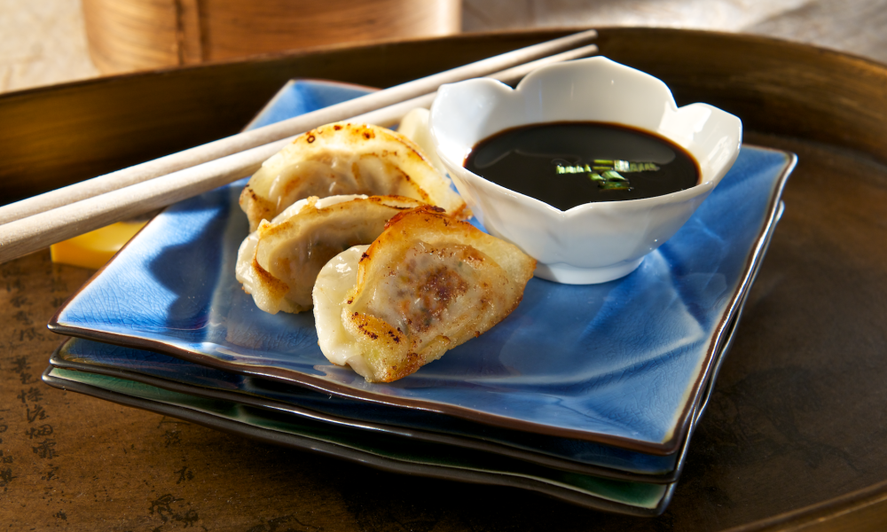

Thomas A. Edison
Web Development
Make a Project
By
Grace Cao
10/17/23
How To Make Potstickers

What you will need:
non-stick pan
cooking oil of choice
water
a standard-sized bowl
dumpling of choice
Cooking Steps:
Heat the oil in the pan on medium-high heat
Add the dumplings to the pan and cook until bottom is slightly golden;
**BOTTOM MUST BE MOSTLY WHITE**
Add enough water into the pan to cover the bottom of the dumplings (about a centimeter or two)
Cover the pan with a lid and cook on medium-low heat until the dumplings are slightly translucent
By now, there should be little to no water left in the pan. If there is, let the dumplings cook until there is no water left
Remove the lid and serve with your condiment of choice!